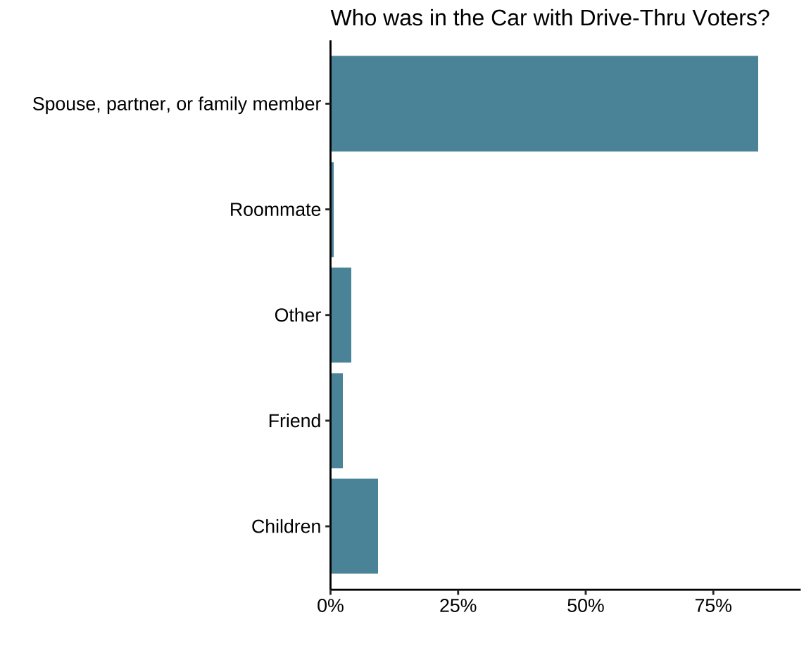
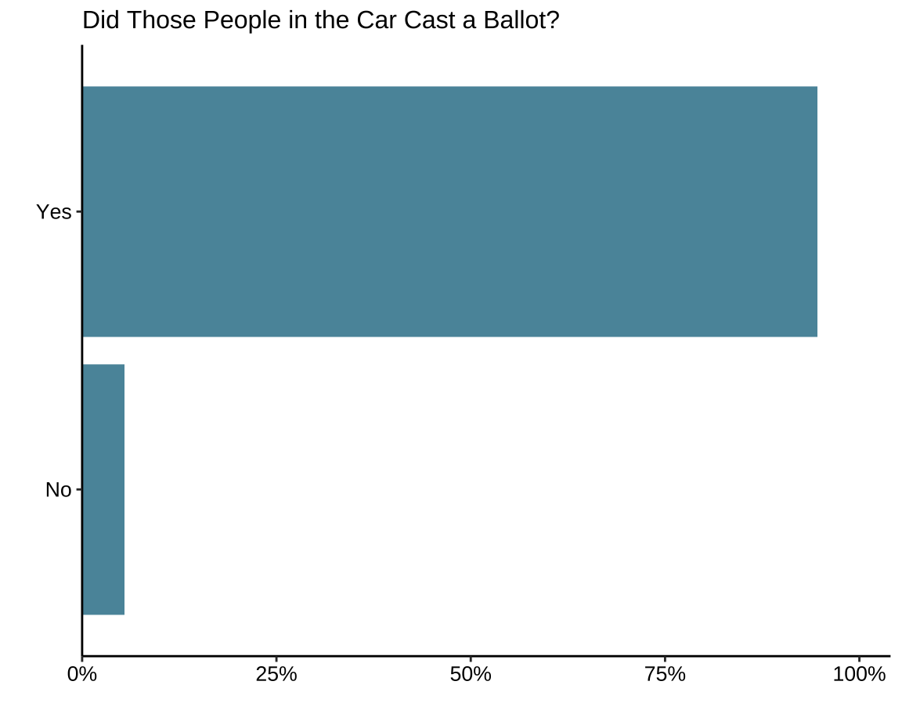

Section 4: Drive-Thru Voting
Drive-Thru Voter Carpooling
Drive-Thru Voters’ Carpoolers

Drive-Thru Voters with Other Voters

Q2.1: Why did you choose to vote absentee/by mail? Please select all that apply.
Q2.2 Did you fill out your ballot with anyone else, such as a family member or friend, or did you complete your ballot by yourself?